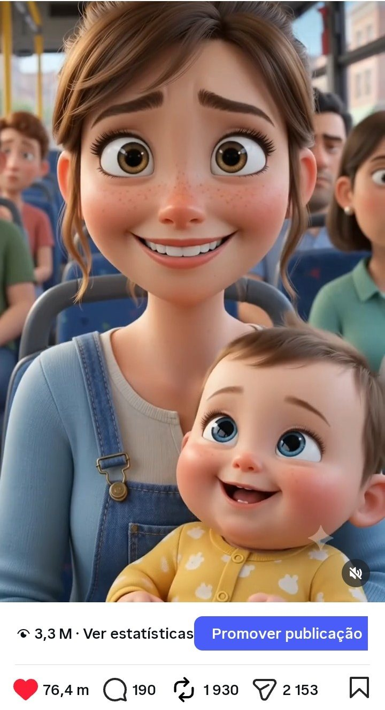
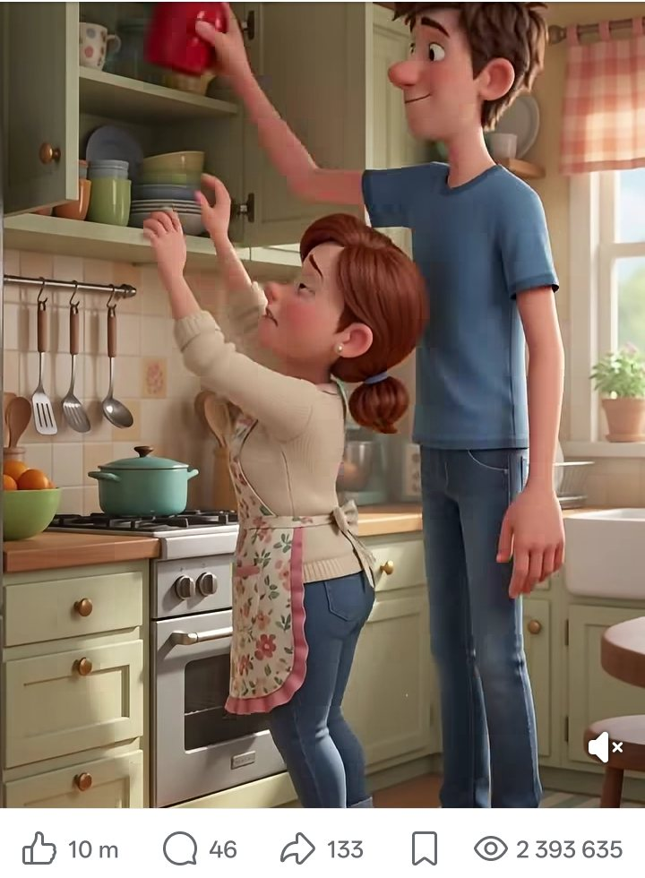
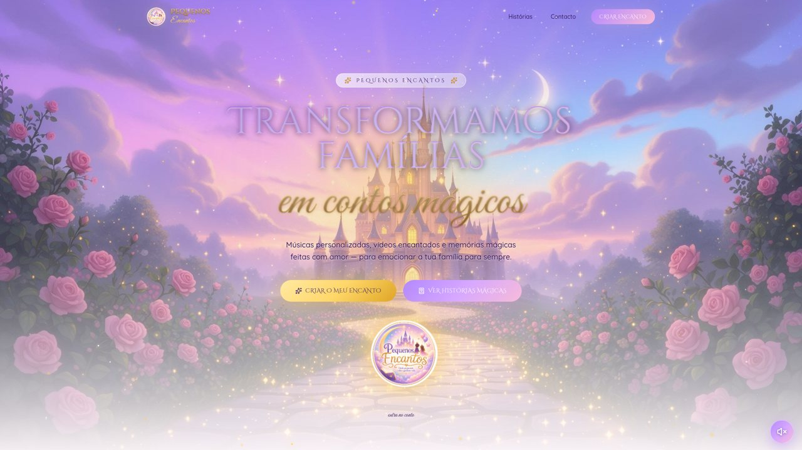

Como começou
Começou com um presente para a minha filha
Em março de 2026, a minha filha fez 4 anos e eu fiz-lhe um vídeo animado com música. Ela adorou. Mandámos o vídeo à família e ficaram encantados. Uma amiga da família chorou muito ao vê-lo, deu-me os parabéns e disse-me que aquilo era um talento e uma sensibilidade, e que podia fazer o mesmo para outras crianças.
Fiz vídeos para sobrinhas e sobrinhos, fui fazendo, e em maio de 2026 abri os canais do Pequenos Encantos. O primeiro trabalho vendido foi um vídeo de 11 minutos em espanhol, por 150 €, para um amigo da família.
«Isto é um talento e uma sensibilidade.» — uma amiga da família, depois de ver o primeiro vídeo
O que faz
O que criamos
Cada peça é feita a partir dos nomes, das fotos e da história de cada família.
Personalizado para cada família
Vídeos personalizados
Curtas-metragens encantadas com a família como protagonista: príncipes, princesas e heróis num universo mágico.
Músicas com nome
Uma música única com o nome das crianças, à medida da história de cada família.
Memórias mágicas
Para aniversários, babyshower e gravidez, bebés, famílias inteiras e homenagens aos avós.
Para todos, nas redes
Vídeos curtos
Pequenas histórias animadas do dia a dia de pais e filhos, para emocionar e entreter.
«Há momentos em que o silêncio de um autocarro cheio…»
Ecrãs
Como se vê



Por dentro
Como se pede um vídeo encantado
O site foi pensado para emocionar primeiro e facilitar o pedido depois.
- Site · galeria
Ver histórias já criadas
A família explora exemplos por ocasião: princesas, famílias, bebés, gravidez, aniversários e avós.
- Site · formulário ou WhatsApp
Contar a história
Nome, ocasião e uma mensagem livre com nomes, idades e sonhos. O pedido chega por email, ou a família fala diretamente pelo WhatsApp.
- Criação
Compor a música e o vídeo
A música e o vídeo são criados a partir das fotos, dos nomes e dos pormenores que a família partilhou.
- Entrega
Uma memória para guardar
A família recebe a memória em alta qualidade, pronta a ver, a partilhar e a oferecer.
Como foi feita
As ferramentas, explicadas sem jargão
As ferramentas do site, explicadas sem jargão.
O site
Onde o site foi criado e está publicado, em pequenosencantos.lovable.app.
Os ecrãs, a galeria e as animações: céu estrelado, partículas de luz e música de fundo que se pode desligar.
Faz chegar cada pedido do formulário à caixa de correio, com os dados da família.
Para quem prefere falar logo, sem formulário.
O que aprendi
O que funcionou e o que mudou pelo caminho
Aprendizagens reais, de quem foi testando e ouvindo o público.
Os vídeos longos, de 3 a 5 minutos, chegavam a poucas pessoas nas redes.
Passei a fazer vídeos de cerca de 10 segundos, e o alcance explodiu.
Não sabia se havia quem pagasse por um vídeo personalizado.
A primeira venda foi um vídeo de 11 minutos em espanhol, por 150 €, para um amigo da família.
Um vídeo personalizado emociona uma família, mas só ela o vê.
Os vídeos curtos sobre o dia a dia de pais e filhos chegam a milhões de pessoas e dão a conhecer a marca.
Em números
Os números das redes
Com franqueza
Limites atuais
- Os vídeos personalizados levam tempo a fazer, um a um.
- O alcance vem sobretudo dos vídeos curtos, que não são personalizados.
A seguir
Próximos passos
- Levar quem gosta dos vídeos curtos até ao site e aos pedidos personalizados.
- Mostrar no site mais histórias já criadas, com autorização das famílias.
O meu papel
Lenira Leitão
A ideia, as histórias, os vídeos, as músicas e a gestão das redes são meus. O site foi criado com ferramentas de IA (Lovable), a partir dos meus pedidos.
Aprendi a ouvir o público: quando os vídeos longos não chegavam a ninguém, mudei de formato e encontrei o que emociona as pessoas.